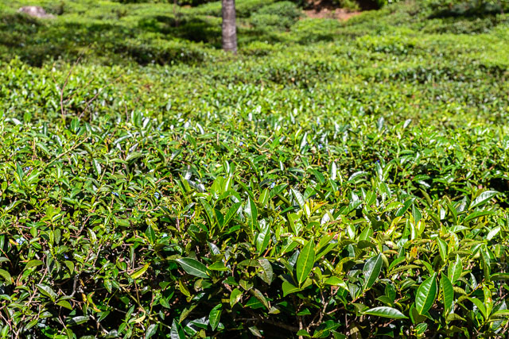
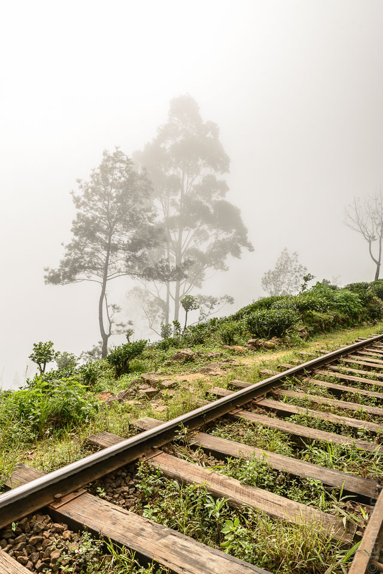
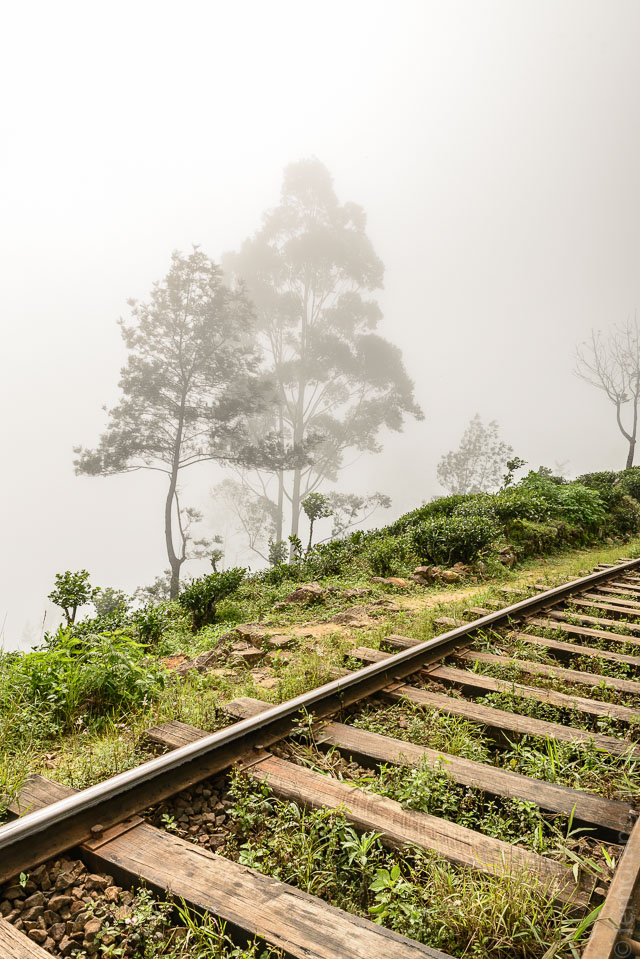

Auf Empfehlung sind wir von Ella nach Haputale gefahren und dort im "Amarasinghe Guesthouse" abgestiegen. Ein altes Ehepaar führt das etwas abgelegene Guesthouse, das ein bisschen an die kubanischen Casa Particulares erinnert. Die beiden sind zwar sehr niedlich, aber genauso vergesslich und machen fürchterliche Sandwiches.
Haputale liegt auf einem Bergrücken, wo sich ein paar Straßen treffen, und ist nach Süden hin meistens in Wolken gehüllt. Der andere Hang gibt den Blick auf Tee frei. Der Ort ist insofern authentisch, als hier nichts auf Touristen ausgelegt ist.
Für den Rest des Tages haben wir eine Wanderung zum "Adisham House" (bzw. jetzt Kloster) geplant. Der Weg führt durch schön angelegte Teegärten und später in einen Wald. Nach einer Weile traut man seinen Augen nicht, wenn hinter einer Kurve ein englisches Tudor-House in einem gepflegten Garten erscheint. Hier hatte es sich einst ein Plantagen-Chef bequem gemacht. Jetzt werden in den grauen Mauern Novizen ausgebildet.

Hinter diesem skurrilen Zwischenstopp beginnt ein Trampelpfad durch einen verwunschenen Nebelwald. Die langen, glatt geschälten Stämme des Eukalyptus enden in den Wolken, die vom Wind zwischen die Bäume getrieben werden. Tiefer am Hang verläuft das unbefahrene Eisenbahngleis. Später weicht der Wald einer Bergheide mit Rhododendron-Bäumen. Der Weg führt schließlich zu den Schienen hinab.

 

Unser Plan im nächsten Ort den Bus zurück zu nehmen wurde von einer entweder frisch zerstörten oder immer schon schlechten Straße vereitelt, über die wohl kein Verkehr geht (was echt etwas heißen soll). Der einzige Rückweg, der nicht wieder durch den Wald führt, war die Schiene. Das wurde im Reiseführer eigens erwähnt und empfohlen, was die Zurechnungsfähigkeit der Autoren vollends in Zweifel stellt. 8km in Trippelschritten über glitschige, unregelmäßige Schwellen zu laufen zerstören Körper und Geist.